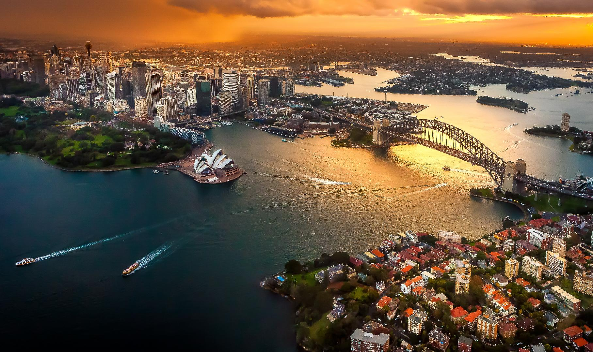
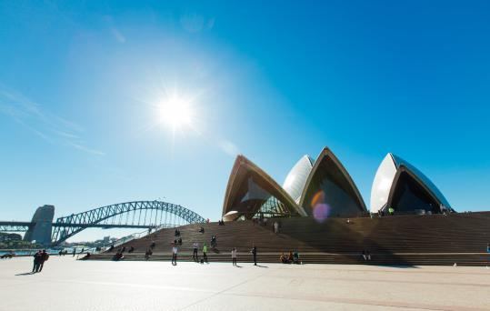

After a thorough examination on the trends of couple family households without children through the use of QGIS and ABS Data, we had discovered that there has been a noticeable increase in the number of couples choosing to live without children between 2011 and 2016. We had also witnessed the distribution of this type of household to be dominantly flat or apartment and within the city CBD region of Sydney. Taking that into account we set out to solve an issue that was identified previously in that the city CBD does not have an adequate number of couple locations or romantic destinations and certainly none that was of a large scale. Conclusively, we embarked on creating an attraction for all couples, stylised with a view of the sky during night and day as well as the illumination of the city surrounding the attraction. The Sydney Harbour Bridge, Opera House and Luna Park are all viewable from different perspectives to give participants the best viewing experience if they decide to choose so.
The sites that we have chosen are Goat Island and Blues Point Reserve. Goat Island was specifically chosen as the best island to situate our attraction as it is off the shore of multiple different areas such as Balmain East, Dawes Point, McMahons Point and few others. This allows easy access to Goat Island as there is no other way to arrive than to board a ship to the island. This is to symbolise a disconnect from the stresses and complications of life outside the attraction, couples should feel as if this island is a place to escape and be alone with each other and be surrounded by people who are looking for a similar experience. Due to the nature of Goat Island’s location, couples may view several tourist attractions such as the Harbour Bridge and Luna Park from a distance which provides a unique viewing location of the city off the shores.

Blues Point Reserve is a secondary but equally fulfilling location for couples to settle in as the area has an open view of the city and is able to see the Sydney Harbour Bridge, Luna Park, the city skyline and the Sydney Opera House in full view. This site is for those couples who wish to then raise a family in a suburban environment yet wish to remain close to the city. The attraction in this location will also remove the Blues Point Tower which many have criticised as “inconsistent with its surrounding buildings and cityscape”.

Taking the data that was analysed from QGIS we can assume, with the increase in couple households with no children from 2011 to 2016 and the high instances of these couples living in flats or apartments in the city CBD region that they are most probably younger individuals who are working and are not at the age they believe in should start having children. Sydney’s CBD is also not very profound in having romantic destinations for these younger couples as most of the CBD is filled with business orientated areas and there is hardly any ‘green’ areas such as parks in proportion to tall buildings. Due to the way the CBD is condense, these green areas are often not too far away from the usual commercial areas which makes it hard to find a time to disconnect and share a truly romantic/couple moment. By removing the distracting elements of the city and isolating the couples into an area where it is only them but remaining within the city atmosphere, this can solve the issue of a lack in romantic destinations as well as incentivise the making of a family by consolidating the love that the couples have with each other with an affordable but unforgettable romantic experience.
Furthermore, by providing the spaciousness typically associated with house further out west we hope to provide an incentive for families to raise their children whilst remaining close to the city (essentially within the city) to allow for shorter commute times thus enabling more quality time with the family. This is accomplished by creating an artificial mountain community of families living in large two storey homes complete with a lawn and a stellar view. The surrounding park land and infrastructure is perfectly capable of accommodating this large influx of children. We know that by doing this the city will be a far less lonely and far safer location.